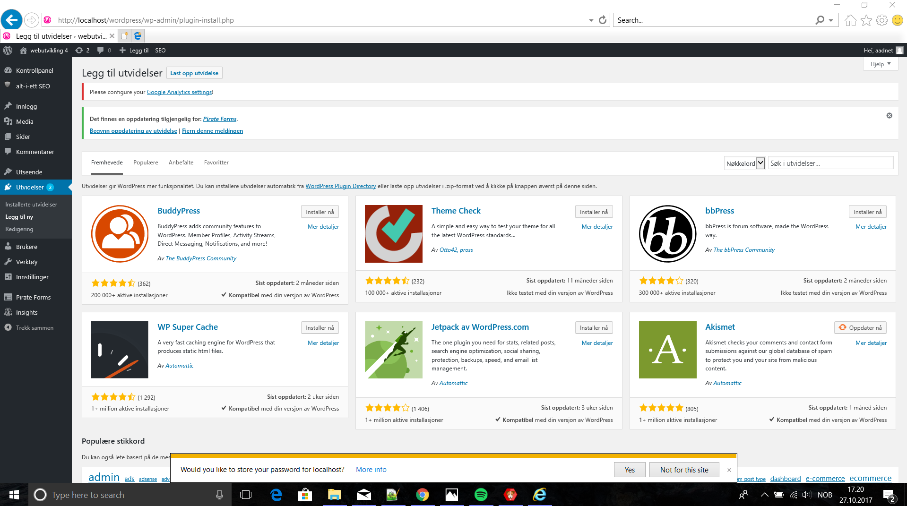
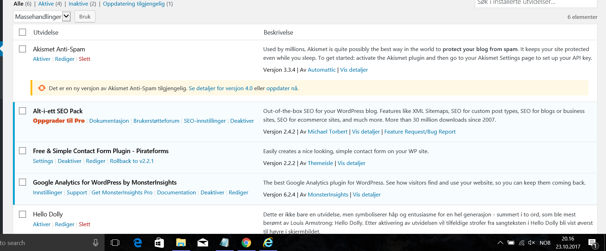
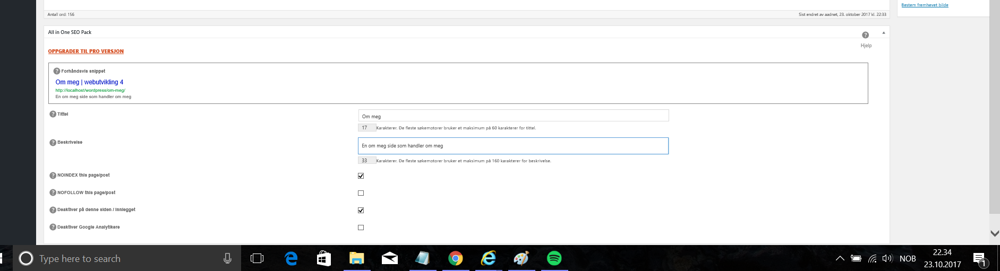
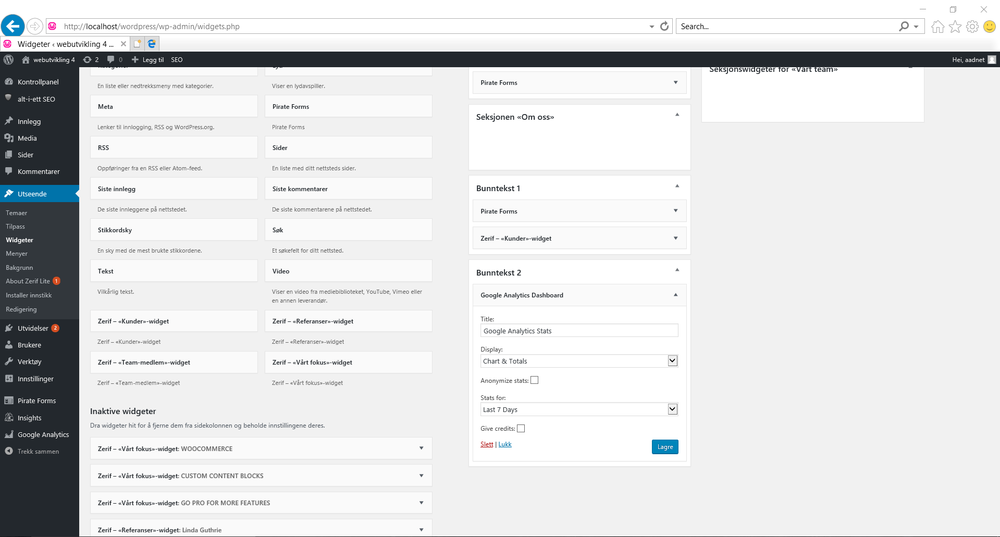
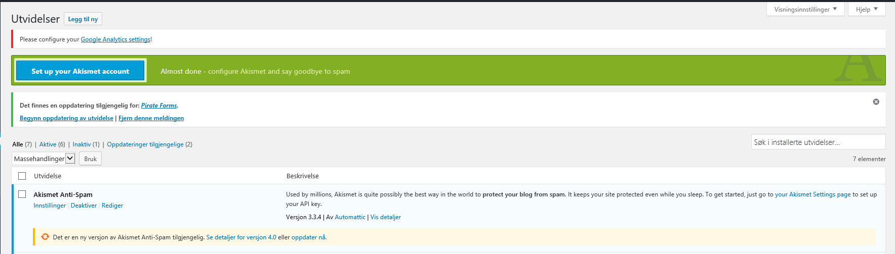

Widgets og plugins
Definisjon av widget og plugin
WIDGET er et miniatyrprogram, for eksempel en søkemotor. Plugin er det vi på norsk kaller en utvidelse, er mindre snevert og kan også inkludere widgeter. Et eksempel på det sistnevnte er f.eks en SEO-plugin.
Installasjon av plugins og widgets
Installerte plugins
Installasjon gjøres ved å trykke på utvidelser på menyen til venstre, og å installere dette ved å enten søke det opp, eller ved å finne filen lokalt på pcen som vist på bildet  . For å aktivere dette må vi gå på installerte utvidelser og trykke aktiver  I dette prosjektet testet jeg ut akismet anti-spam og en SEO-plugin. . 
{kind=link}
{kind=link}
{kind=link}
Installerte widgets
Nedenfor følger de widgetsene som har blitt installert for akuratt dette prosjektet.
 {kind=link}
{kind=link}
Pirate-forms vil gjøre det lettere med tanke på kontaktinformasjon, og er påkrevd for akuratt dette temaet. Dog, siden dette ikke er online, vil det ikke ha mye for seg å faktisk bruke dette. Utenom dette ble Akismet anti-spam widgeten brukt, siden denne fulgte med pluginen for akismet anti-spam.
Anbefalte plugins ifra foreleser
- "Yoast SEO"
- "TablePress" - For å lage tabeller.
- "Contact Form 7" (Funker ikke lokalt), e-post-skjema
- "Relevanssi", erstatter Word Press sin søker med en bedre søkemotor.
- "Wordfence". Sikkerhetsplugin til WordPress. Finnes som både pro og vanlig utgave. Kan styre trafikken inn på siden. Bør være med på alle WordPress-sider.
- "All in one WP-security", Wordfence men bedre.
Sikkerhet
Hold alt oppdatert til ennhver tid. Kun velg plugins som er testet opp til nyeste utgave av Word Press. Dette henger sammen med sikkerhetshull ssom kan tettes ved senere utgivelser.